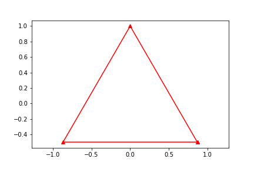
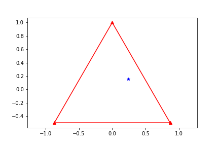
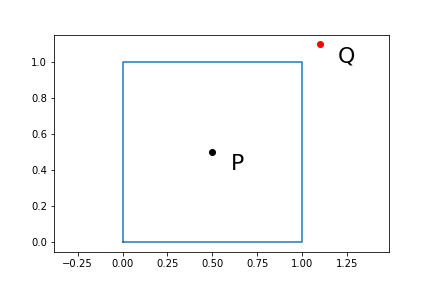
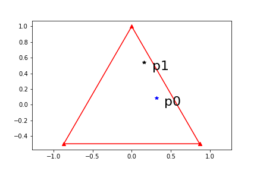
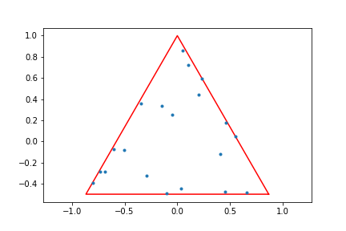

due: Friday, Oct. 14 at 11:59 pm
In this project we are going to explore the following algorithm:
Start with a regular triangle
Select a random point \(\mathbf{p}_0\) inside the triangle
Select a vertex \(\mathbf{v}\) of the triangle at random
The point \(\mathbf{p}_1\) is found moving a fraction \(f=\frac{1}{2}\) of the distance between \(\mathbf{p}_0\) and \(\mathbf{v}\) in the direction of \(\mathbf{v}\)
Store \(\mathbf{p}_1\) in a container and update \(\mathbf{p}_0\) = \(\mathbf{p}_1\)
Go back at step 2 (repeat steps 2-5 for a large number of times)
Sketch all of the points obtained, except the first \(m\) (where \(m\) is a small number)
Ex.1 Write a Python function vertices(n). The function should return the vertices of a regular cyclic polygon with n sides (inscribed in a circle with radius 1)

Ex.2 Write a Python function pick_p0 that selects the initial point \(\mathbf{p}_0\) for the algorithm

Note: The python module matplotlib.path can be used to check if a point is contained inside of a polygon as follows:
consider
v=[(0,0),(0,1),(1,1),(1,0)] vertexes of a square
P=(0.5,0.5) point inside the square
Q=(1.1,1.1) point outside the square
Use Path(v) to create a path with the given vertexes
Use contains_point( (x,y) ) to check if the point is inside the path
[36]:
import matplotlib.path as mplPath # import module with alias
v=[(0,0),(0,1),(1,1),(1,0)] # vertexes of a square
P=(0.5,0.5) # point inside the square
Q=(1.1,1.1) # point outside the square
poly_path = mplPath.Path(v) # create path with vertexes

The function contains_point( (x,y) ) returns True if the point is contained in the path poly_path and False otherwise
[14]:
poly_path.contains_point(P)
[14]:
True
[15]:
poly_path.contains_point(Q)
[15]:
False
Ex.3 Write a Python function pick_p1 that given \(\mathbf{p}_0\) will find the next point, \(\mathbf{p}_1\), in the algorithm

Project:
Explore, describe and analyze the results produced by the algorithm for different regular polygons (\(n\geq 3\)), different values of \(f\).
Note/Suggestion: Some choices for the value of \(n\) might give more “interesting” results than other values. If the result obtained does not look very “interesting” it might be of value to add some constrain on the way the vertex \(\mathbf{v}\) is chosen.
Here is an example with 20 points for the regular triangle (\(n=3\))
